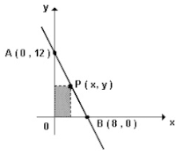

A figura mostra um retângulo com dois lados nos eixos cartesianos e um vértice na reta que passa pelos pontos A(0,12) e B(8,0).

As dimensões x e y do retângulo, para que sua área seja máxima, devem ser, respectivamente, iguais a
Resposta:
O vértice está sobre a reta, portanto, o valor de x e de y seguem a lei de formação da própria reta. Além disso, o valor de y nesse ponto representa a altura do retângulo, enquanto o valor de x representa a largura. Primeiramente, encontraremos a lei de formação dessa reta. Essa lei é uma função do primeiro grau (ou função afim) e, assim, sua forma padrão é:
Agora, usando os dois pontos que temos, podemos facilmente encontrar os coeficientes dessa reta. Substituindo o primeiro ponto, A: (0; 12), temos:
Com isso, já temos o coeficiente b. Substituindo o outro ponto, B: (8, 0), teremos o valor do coeficiente a:
Como agora temos a relação entre x e y, precisamos encontrar a área do retângulo que é
Perceba que, pelo coeficiente a (valor que multiplica
)
ser negativo, a concavidade da parábola é para baixo. Portanto, o vértice da parábola é o ponto máximo da área. Além disso, as abscissas dos pontos A e B são raízes da equação, pois nesses pontos uma das grandezas é 0 e, portanto, não temos um retângulo:
Como é uma equação do segundo grau e temos ambas as raízes, o
está no meio entre essas raízes, ou seja, na abscissa x = 4. Agora, para encontrar o valor de y, basta substituir esse valor na função da reta: